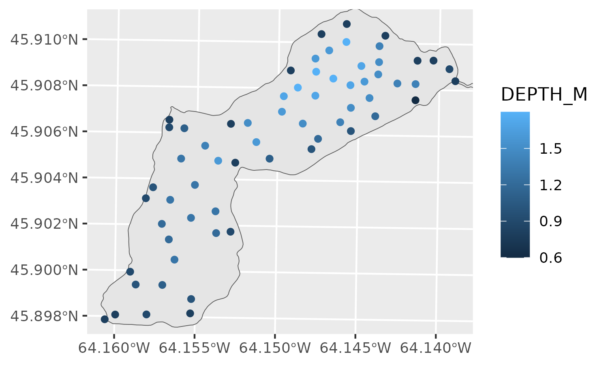
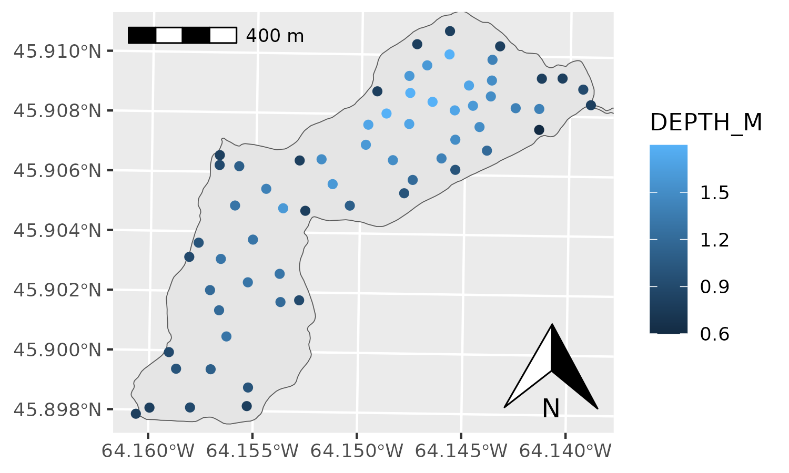
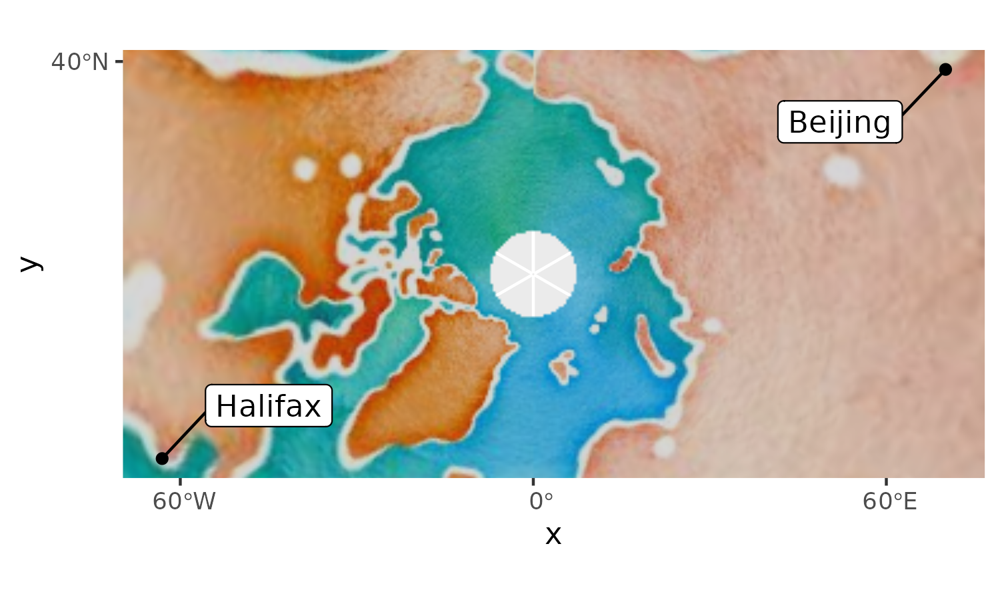

Spatial objects using ggspatial and ggplot2
Dewey Dunnington
2022-07-06
Source:vignettes/ggspatial.Rmd
ggspatial.RmdOn first use, a GIS user who stumbles across ggplot2 will recognize much of the syntax of how plots are built from GIS language: there are layers, geometries, coordinate systems, and the ability to map attributes to the appearance of the layer (aesthetics). With ggplot version 3.0, geom_sf() and coord_sf() let users pass simple features (GIS layers from the sf package) objects as layers. Non-spatial data (data frames with XY or lon/lat coluns) and raster data are not well-supported in ggplot2, which is the gap filled by this package.
This vignette assumes that readers are familar with the usage of ggplot2. There are many excellent resources for learning to use ggplot2, one of which is the data visualization chapter in Hadley Wickham’s excellent book, R for Data Science.
Sample data
This vignette uses some data that was used in/collected for my honours thesis. The data is included as files within the package, and can be loaded using load_longlake_data(). If you’re looking to read in some of your own data, you may be interested in sf::read_sf() or raster::raster().
Using layer_spatial() and annotation_spatial()
Any spatial layer can be added to a ggplot() using layer_spatial() (well, any object from the sf, sp, or raster packages…). These layers will train the scales, meaning they will be visible unless you explicitly set the X or Y scale limits. Unlike geom_ or stat_ functions, layer_spatial() always takes its data first. Aesthetics can be passed for most types of objects, the exception being RGB rasters, which are more like backround images than data that should be mapped to a scale. Unlike layer_spatial(), annotation_spatial() layers never train the scales, so they can be used as a backdrop for other layers.
ggplot() +
annotation_spatial(longlake_waterdf) +
layer_spatial(longlake_depthdf, aes(col = DEPTH_M))
With raster layers, you can also use layer_spatial(). ggspatial takes care of reprojecting the raster such that it aligns with other datasets, and, if it is an RGB(A) raster (like many airphotos), will display it as such. You can refer to bands to map aesthetics as stat(band1) (or another band, if there is more than one in the raster). To get no data values to display as “no data”, you’ll have to set the na.value of the scale to NA (or 0 if it is an alpha scale).
ggplot() +
layer_spatial(longlake_depth_raster, aes(fill = stat(band1))) +
scale_fill_viridis_c(na.value = NA)
Using north arrow and scalebar
North arrows are added using the annotation_north_arrow() function, and scalebars can be added using annotation_scale(). These functions are “spatial-aware”, meaning they know where north is and what the distance is across the plot. Thus, they don’t need any arguments (unless you think the defaults aren’t pretty). There are two styles for scalebars and four styles for north arrows (see ?annotation_scale and ?annotation_north_arrow for details).
ggplot() +
annotation_spatial(longlake_waterdf) +
layer_spatial(longlake_depthdf, aes(col = DEPTH_M)) +
annotation_scale(location = "tl") +
annotation_north_arrow(location = "br", which_north = "true")
Tile map layers
Using the rosm package, ggspatial can add tile layers from a few predefined tile sources (see rosm::osm.types()), or from a custom URL pattern. The tiles will get projected into whatever projection is defined by coord_sf() (this defaults to the CRS of the first geom_sf() or layer_spatial() layer that was added to the plot). It’s usually necessary to adjust the zoom to the right level when you know how the plot will be used…the default is to be a little more zoomed out than usual, so that the plot loads quickly. Higher zoom levels will make the plot render slowly quite fast. Use progress = "none" to suppress the messaging (particularly nice for use within RMarkdown).
ggplot() +
annotation_map_tile(type = "osm") +
layer_spatial(longlake_depthdf, aes(col = DEPTH_M))There are a number of url patterns available for tiles, although how they are formatted varies. The rosm package uses ${x}, ${y}, and ${z} for the x, y , and zoom of the tile (or ${q} for the quadkey, if you’re using Microsoft Bing maps), which is for the most part the same as for QGIS3. For some freely available tile sources, see this blog post, and for a number of other tile sources that are less open you’ll have to dig around yourself. Bing Virtual Earth is a particularly good one (type = "http://ecn.t3.tiles.virtualearth.net/tiles/a${q}.jpeg?g=1").
Data frames with coordinates
Lots of good spatial data comes in tables with a longitude and latitude column (or sometimes UTM easting/northing columns). In ggspatial you can use df_spatial() to get a spatial object into a data frame with coordinate columms. Conversely, you can use a data frame with coordinate columns in geom_spatial_* functions to use these data with geom_sf()/coord_sf()/layer_spatial(). The geom_spatial_point() (wrapping geom_point()) and geom_spatial_label_repel() (wrapping geom_label_repel() from the ggrepel package) functions are the most commonly used in this situation. For example, a polar perspective on two cities across the world from eachother could look like this:
cities <- data.frame(
x = c(-63.58595, 116.41214),
y = c(44.64862, 40.19063),
city = c("Halifax", "Beijing")
)
ggplot(cities, aes(x, y)) +
annotation_map_tile(type = "stamenwatercolor") +
geom_spatial_point() +
geom_spatial_label_repel(aes(label = city), box.padding = 1) +
coord_sf(crs = 3995)